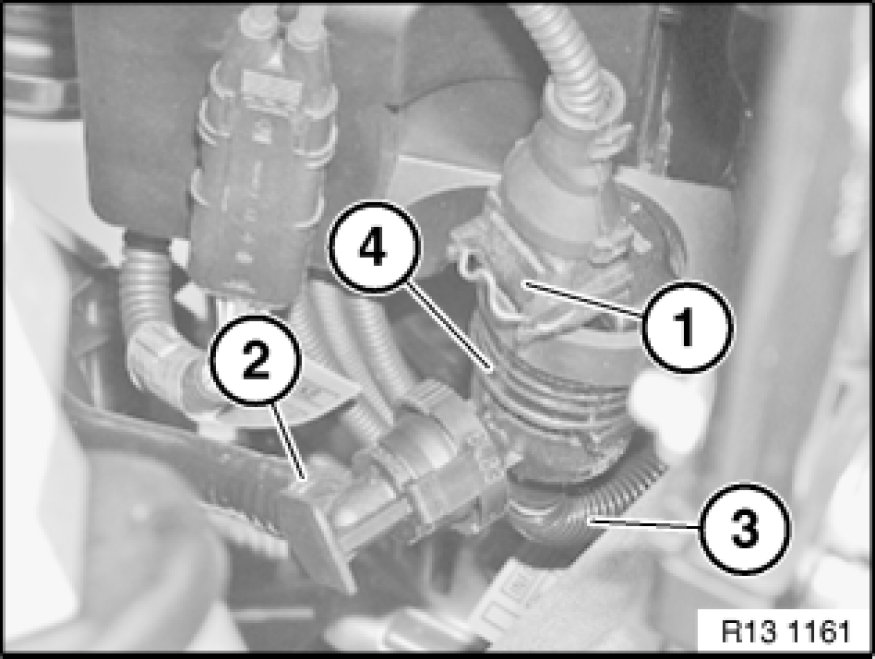

Fuel Tank Vent: Service and Repair
13 90 500 - Replacing tank vent valve (N52 / N52K / N51 / N53)

Necessary preliminary tasks:
- Check stored fault messages
- Switch off ignition
- Remove throttle valve assembly Service and Repair
Installation location:
Tank vent valve is fitted at bottom on intake air manifold.

Unlock plug (1) and remove.
Unlock hose (2) and detach.
Unlock hose (3) on intake manifold and detach.
Detach tank vent valve (4) from bracket and remove.

Note:
Read out fault memory of DME control unit.
Now clear the fault memory.